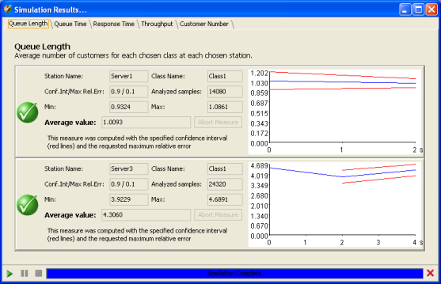

______________________________
Two types of simulation results are available: single simulation run and What-If Analysis run.
Results from a single simulation run:
After the simulation, JSIMgraph will show a panel with several tabs corresponding to the performance indices previously selected.
An example of the windows follows:

If there are more indices of the same type, for example one index referred to two or more different stations or different classes, you can see the graphs under the same tab.
In each window, results for all the stations for which the performance index is specified are listed. Numerical values and graphs are given.
Successful results (i.e. if the confidence interval has been computed with the precision set by the user) are indicated by a checkmark sign on a green bullet .
In case of errors or of early termination, a cross on a red bullet indicates that the results obtained are not within the requested confidence interval.
In case of sintactically correct components that make no sense from a modeling point of view, e.g., a station that is never visited by any customer, a question mark on a yellow bullet indicates that the simulator could not compute the index for lack of measurements.
Values are available for:
Station Name: This is the name of the station for which the index is computed.
Class Name: This is the name of the class for which the index is computed at the station (it could be "All", to mean All Classes).
Conf.In / Max Rel.Err.: This is the Confidence Interval and Maximum Relative Error of the computed index.
Analyzed Samples: This is the number of samples used to compute the performance index.
Min.: This is the minimum value observed for the index.
Max.: This is the maximum value observed for the index.
Average Value: This is the computed average value of the index, usually the value of greater interest.
Click on graph to analyze it in detail.
Each graph plotted by the simulation engine, has the values of the corresponding index (blue line) with the Confidence Interval in red lines:
For more information see "How to modify simulation parameters"
Result from a What-If Analysis simulation run:
At the end of a What-If analysis simulation run, a panel showing the statistical values of the indices, a graphical behavior of the indices with respect to the control variable of the What-if analysis and a table is shown. The panel shows a number of tabs corresponding to the number of indices you have inserted.
For each tab, i.e., each performance index, the results are grouped into three parts:
The first consists of the description of the names of the index of the station and of the Class, the number of samples executed, the confidence interval and the maximum relative error applied and the minimum and maximum values of the index.
The second is rappresented by a graph with a grid to facilitate the reading and the X and Y axes with their measure unit and scale. By default, on the graph are plotted the confidence interval range for all the executions with different values of the What-if analysis control variable, that can disabled through the checkbox.
The third part consists of a table showinf the results of each simulation run. The number of columns of the table corresponds to the number of steps executed. When the simulation engine cannot compute the confidence interval or the max relative error with the required probabilities, the values are written in red.
The size of each plot can be enlarged by double-clicking on it.